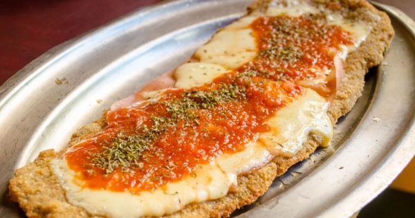

Milanesa Napolitana

Description
Milanesa napolitana is a variaton on the breaded fried steak with a slice of ham, tomato sauce and mozzarella.
Commonly known as an argentinian and uruguayan dish, it's thought to have been invented in the 1940s at Buenos Aires.
Ingredients
- 4 thinly sliced skillet steaks
- 3 large eggs
- 1 teaspoon oregano
- Kosher salt, to taste
- 2 cups fresh bread crumbs
- 1/4 cup grated Parmesan cheese
- 2 cloves garlic,finely minced
- Freshly ground black pepper, to taste
- 1/3 cup olive
- 1/2 cup tomato sauce
- 4 slices deli ham
- 1 cup grated mozzarella cheese
- French fries, for serving
Steps
- Gather the ingredients.
- Place eggs in a shallow bowl or pan, and whisk together with oregano and salt and pepper
- Stir Parmesan cheese and garlic into bread crumbs and place in another shallow pan
- Dip steaks first in egg mixture, then in bread crumbs, coating well with crumbs.
- Heat oil in a heavy skillet, and cook steaks for several minutes on each side, until golden brown and crispy. Drain steaks on paper towels.
- Place steaks on a baking sheet. Turn on broiler.
- Top each steak with a slice of ham, 2 to 3 tablespoons tomato sauce, and 1/4 cup grated mozzarella cheese.
Sprinkle Italian seasoning over cheese, and place steaks under broiler until cheese melts.